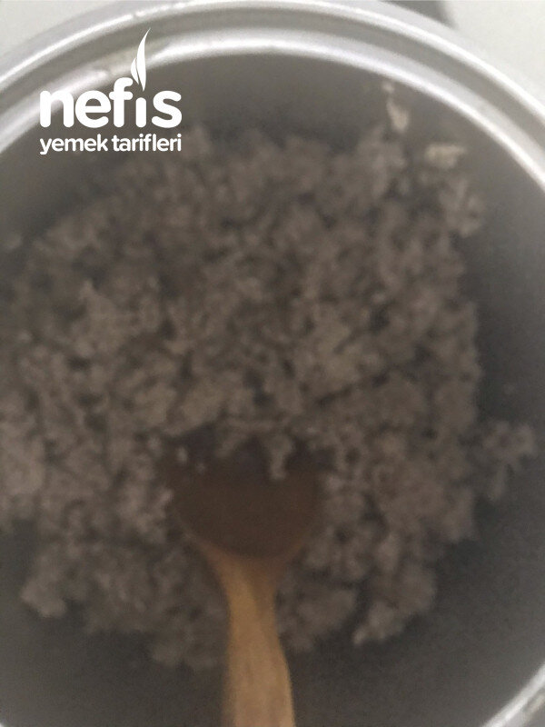

🍽️ 8-10 kişilik⏱️ Hazırlık: 30 dk🔥 Pişirme: 15 dk🏷️ Hamur İşi Tarifleri🏷️ Börek Tarifleri
Malzemeler
- Yarım kg kıyma
- 3-4 iri soğan
- 1/3 çay bardağı kadar zeytinyağı
- Tuz
- Karabiber
- Pulbiber vs
- İsteğe bağlı bir bardak kadar ceviz içi
- 2 bardak su
- 2 bardak süt
- 2 yumurta
- 4 bardak un
- 1 çay kaşığı soda veya kabartma tozu
- Tuz
- 1/2 (yarım) çay bardağı kadar un
- 2 yumurta
- 1 çay bardağı kadar galeta unu
- 1 bardaktan fazla zeytinyağı
Hazırlanışı
- Önce iç malzemesini hazırlayalım. Kıymamızı kavuralım. Zeytinyağı ilave ederek rondodan geçirdiğimiz soğanları ilave edelim.
- Soğanlar da iyice kavrulunca baharatları ve tuzu ilave edelim. İstenirse maydanoz da ilave edilir. İstege bağlı ceviz de ilave edelim.
- Krep için diğer yandan krepleri hazırlayalım. Yumurta, süt, su, kabartma tozu, tuz ve un ile pürüzsüz akışkan bir hamur hazırlayalım.
- Tavaya 1 çay kaşığı kadar yağ ekleyelim. Tava ısınınca bir kepçeye yakın hamuru tavamıza koyup tavayı çevirerek homojen yayılmasını sağlayalım.
- Kreplerin üzeri kuruyunca üzerine bir çay kaşığı yağ gezdirip ters çevirip diğer yanını da pişirelim.
- Sonlara doğru krep hamuru biraz koyulaşabilir. Biraz su veya süt ilave edebiliriz.
- Benim tavamın çapı 25 cm kadardı. Bu malzemeler ile 13 krep oldu.
- Sıra böreğimizi hazırlamaya geldi. Krepleri masamıza yayalım. Kıymalı malzememizi birer kaşık dolusu eşit olarak paylaştıralım.
- Yaprak sarması gibi rulo şeklini verelim. Önce una bulayalım sonra çırpılmış yumurtaya bulayalım.
- En son galeta ununa bulayarak kızartalım. Kızaran börekleri fazla yağını alması için kağıt peçeteye çıkarabiliriz. Nefis avcı böreklerimiz hazır. Afiyet olsun 😊.